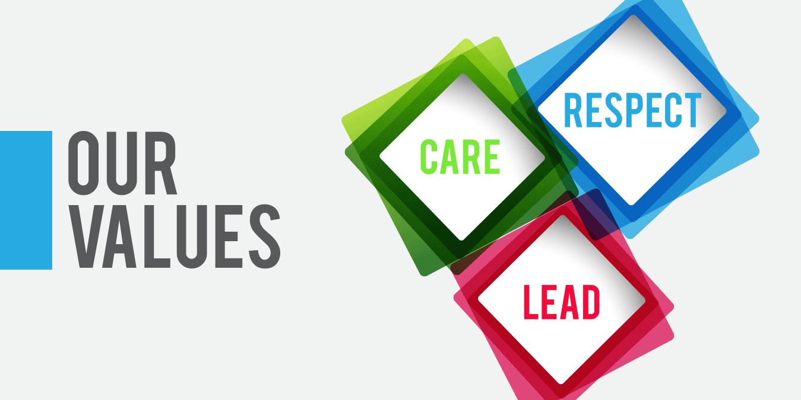
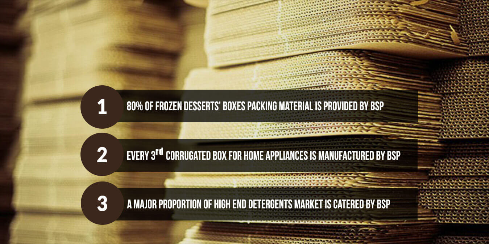

<ion-header>
  <ion-navbar>
    <button ion-button menuToggle>
      <ion-icon name="menu"></ion-icon>
    </button>
    <ion-title>BSPL HOME</ion-title>
  </ion-navbar>
</ion-header>

<ion-content>
  <!-- <h3>Ionic Menu Starter</h3> -->

  <!-- <p>
    If you get lost, the <a href="http://ionicframework.com/docs/v2">docs</a> will show you the way.
  </p> -->


  <!-- <button ion-button secondary menuToggle>Toggle Menu</button> -->
  <div>
  <ion-slides>
      <ion-slide>
        
      </ion-slide>
      <ion-slide>
          
      </ion-slide>
      <ion-slide>
          
      </ion-slide>
      <ion-slide>
          
      </ion-slide>
    </ion-slides>
  </div>
      
      <style>
        .home_button{
          width:40%;
          height: 20%;
          /* font-size: 100px; */
        }
      </style>
      <label ion-label (click)="listPage()" class="home_button"><i class="fa fa-calculator"></i>
        
        ABOUT</label>
      
</ion-content>

